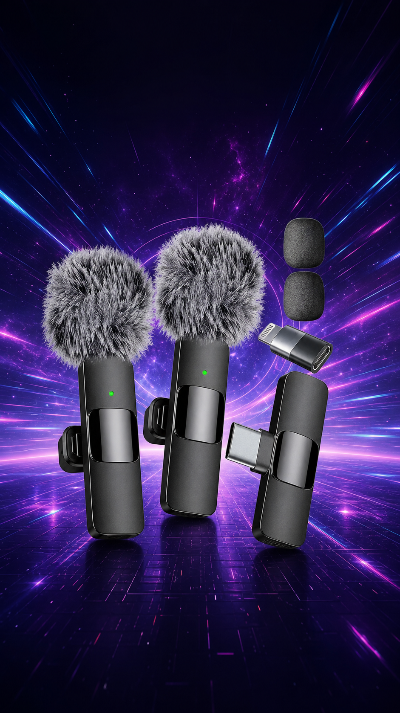

8.8/10
Creadores · Producto verificado
La cámara atrae. El audio hace que se queden.
Micrófono inalámbrico compacto para entrevistas, videos móviles y contenido corto. Su valor está en acercar la voz sin convertir el teléfono en un estudio pesado.
InalámbricoUso móvil.
USB-CCompatibilidad declarada.
CompactoFácil de transportar.
Amazon USDisponibilidad verificada.
Lectura PromoDetector: recomendado para creadores que priorizan portabilidad y claridad de voz. Antes de comprar, confirma que el conector incluido coincida con tu teléfono.
Antes de decidir: revisa conector, sistema compatible, entrega, impuestos y precio actual para tu país.
ASIN B0CMJTSVRW · Verificado el 3 de agosto de 2026. Como Afiliado de Amazon, La Estratosférica obtiene ingresos por compras calificadas.